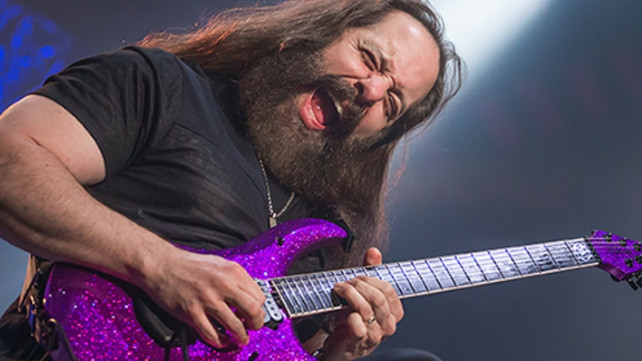

John Petrucci. Progressive mastermind. Expert Producer. Guitar Virtuoso.
John Petrucci is a guitarist, lyricist, and producer, best known for being a founding
member for progressive metal juggernauts Dream Theater. Get to know him and his award-winning
career on this page dedicated to celebrating his illustrious career.

John Petrucci playing one of his signature solos, characterized by a uniquely beautiful tone, technical precision, and blistering speed.